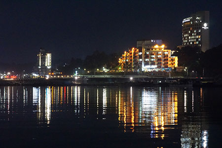

멋진 밤 풍경입니다!
- 야경(夜景, nightscape)은 밤의 도시 경관을 살펴 볼 때, 달빛 등 자연광원에 의한 것이 아닌, 인공 광원에 의한 경관이다. 특히 건축물의 조명, 탐조등, 간판 등이 시야에 밀집해 보이는 경치를 가리켜 "야경"이라고 하는 경우가 많다.
- 서울타워(영어: N Seoul Tower)는 대한민국 서울특별시 용산구 용산동2가 남산 정상 부근에 위치한 전파 송출 및 관광용 타워이다. 1969년에 착공하여 1975년 7월 30일 완공되었다.
- 남한산성(南漢山城)은 대한민국 경기도 광주시 남한산성면에 있는 남한산을 중심으로 하는 산성이며 경기도의 도립공원이다.